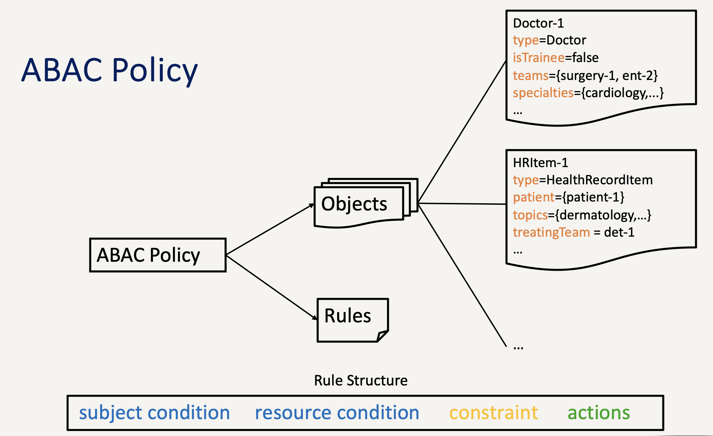
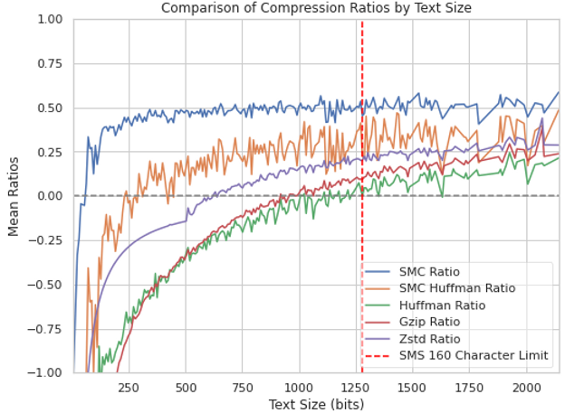
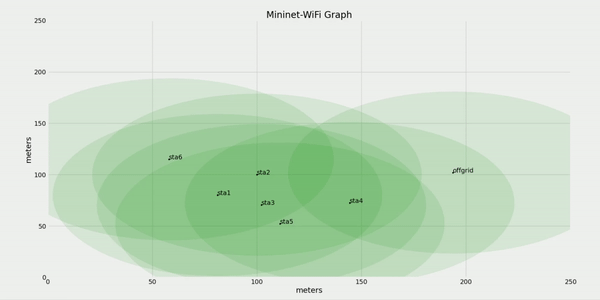

Research
Networks, access control, and efficient communication.
My research and teaching background center on networks and security, including access control, wireless network simulation, short-message compression, and hands-on networking labs for CSUMB's CST 311 course.

Access control
ABAC Policy Attribute Prediction
Attribute-Based Access Control policies are powerful, but missing user attributes can lead to incorrect or unnecessarily restricted authorization decisions. This work explored group analysis methods for predicting missing attribute data and improving policy behavior when identity information is incomplete.

Compression
SMC Compression
SMC is a custom stream compression approach designed for short real-time messages. Traditional compression can perform poorly on brief texts because headers and translation tables overwhelm the payload. SMC avoids that overhead by using dictionaries for compact encoding and decoding, targeting communication scenarios where each byte matters.

Wireless systems
Mobile Ad Hoc Networks
My MANET work evaluates network capability under changing wireless conditions and multi-hop topologies. I used Mininet-WiFi to simulate large wireless networks and study reliability problems that appear when communication depends on mobile peers rather than fixed infrastructure.
Teaching
CST 311: Introduction to Networks
As a teaching assistant for CSUMB's Introduction to Networks course, I developed hands-on labs and programming assignments, held weekly office hours, helped students troubleshoot networking and systems issues, and worked with faculty to refine course projects.